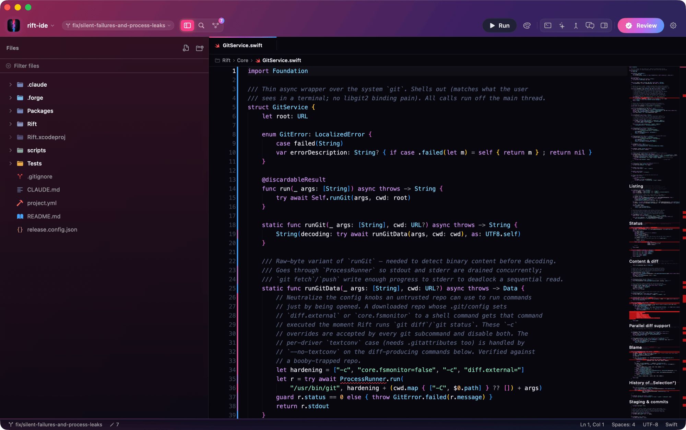
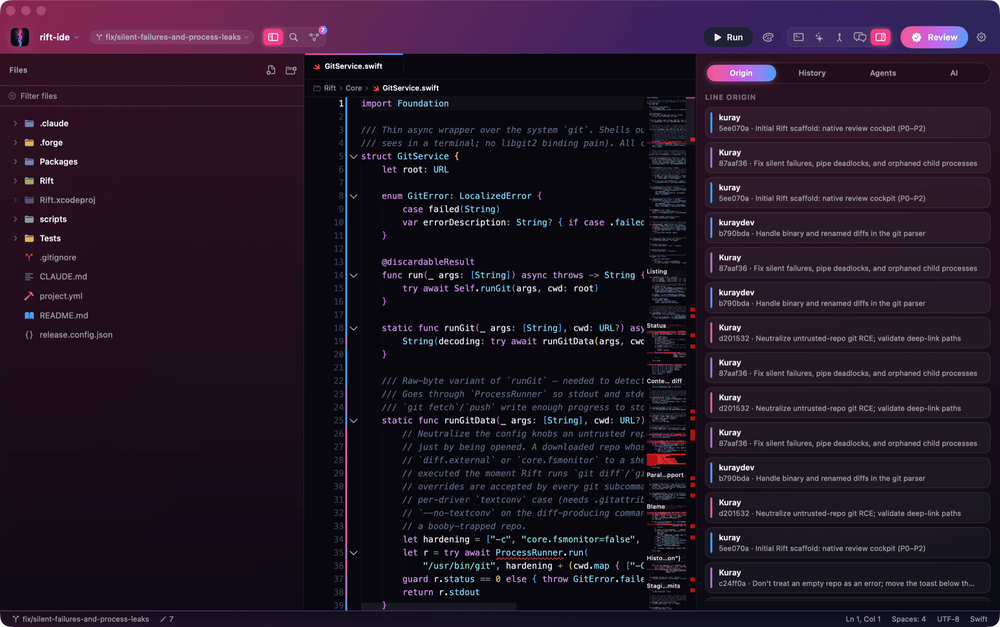
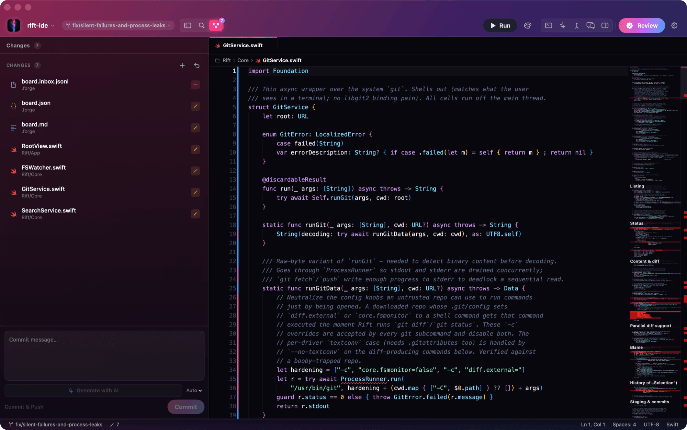

Trust the code
your agent wrote.
Generate code with whatever agent you like — Claude Code, Cursor, Codex, parallel worktrees — then switch to Rift to see what changed, which agent run produced it, and whether it's safe to ship. Before it merges. Native SwiftUI, fully local, on your own keys.
brew install --cask coursion-studio/tap/rift
macOS 26 (Tahoe) or later · Apple Silicon · Auto-updates via Sparkle · See what's inside


Every pixel, native to macOS.
No Electron, no web app pretending — real screenshots of the panes you review in. The editor surface is Monaco; everything around it is SwiftUI.
AI that reviews
what AI wrote.
State what the change was meant to do, then let Claude read the diff for real — bugs, dropped error handling, edits that don't match the intent. Findings come back ranked by severity; click one to jump straight to the line. Runs on your own API key.
- Intent-aware
- Severity-ranked
- Click to jump
- BYO key
Blame that names
the agent, not just you.
The gutter shows more than who touched a line — it maps each change back to the agent session and prompt that produced it, parsed from local transcripts and git history. Select a range and the inspector shows its exact history.
- Per-line origin
- Session mapping
- Range history

Risk-scored
before you escalate.
An on-device model triages every staged diff the moment you stage it — safe, warn, or block — so you know where to look first. No round-trip, no key needed. Escalate the risky ones to a deep Claude review with one click.
- On-device
- Per-file badges
- Zero latency

A real diff surface,
and the PR threads.
Monaco's diff editor for every change, with hunk navigation and go-to-definition. Stage, discard, and commit inline — with an AI-drafted message. Pull the current branch's GitHub review threads right beside the code.
- Monaco diffs
- Hunk nav
- Inline staging
- PR threads

An agent-agnostic review layer.
Rift isn't an editor competitor. It sits beside your agent, not in place of it — the checkpoint between "the agent finished" and "it's on main."
AI reviewing AI
On-device triage on every diff, deep Claude review on the ones that matter — reading for correctness and intent-match, not just risk.
Agent-attribution
The gutter shows not just who but which agent session and prompt produced each line — from local transcripts plus git.
Proper diff & PR review
A Monaco diff surface with go-to-definition, plus GitHub PR threads pulled in beside the code you're reading.
OS-embedded
A menu-bar pending-review indicator and Finder badges on changed files — review state where you already look.
Everything you need to read a change.
A full review workspace — editor, git, language intelligence, and an agent, all local.
Monaco editor & diffs
The VS Code editor surface in a native window — syntax, minimap, and a diff view with hunk navigation and jump-to-context.
- Diff editor
- Hunk list
- Theme-aware
Git, without leaving
Per-file stage, unstage, and discard with hover actions; branch switcher; blame gutter; and a commit panel with an AI-drafted message.
- Inline staging
- Branch menu
- AI commit msg
Built-in agent
A Claude Code session in a panel with a live task board — ask about a selection, or have it make the fix, then review the diff it produced right there.
- Live task board
- Streaming
- Ask a selection
Language intelligence
LSP diagnostics inline, go-to-definition on ⌘-click, and a ⌘⇧O symbol outline — Swift via sourcekit-lsp, TypeScript when it's installed.
- Diagnostics
- Go-to-def
- Outline
Palette & search
A ⌘P fuzzy file opener and ⌘⇧P command palette, plus project-wide ripgrep search with regex, case, and glob filters.
- Fuzzy open
- Command palette
- ripgrep
Parallel diff & terminal
Compare two agent runs or branches side by side with aligned changes, and a real PTY terminal for when you'd rather just run it.
- Two-run compare
- Divergence marks
- PTY terminal
Every version, every download.
Live count, every channel — site and in-app updates.
Native. Local. Agent-agnostic.
A review layer that works with whatever agent you already use.
100% native SwiftUI
No Electron. The editor is Monaco in a WKWebView; everything else is real macOS. It feels like the OS because it is.
Local & on your keys
Your files, your shell, your git. Triage runs on-device; deep review uses your own Claude key, stored in the Keychain — never a plist.
Any agent
Claude Code, Cursor, Codex, parallel worktrees — Rift reads the diff and the git history, so it doesn't care who wrote it.
Auto-updates
Sparkle-signed updates over the air. Apple-notarized DMGs, EdDSA-verified — no App Store middleman.
More from Coursion
Rift is one of a family of native Mac tools. See the rest →